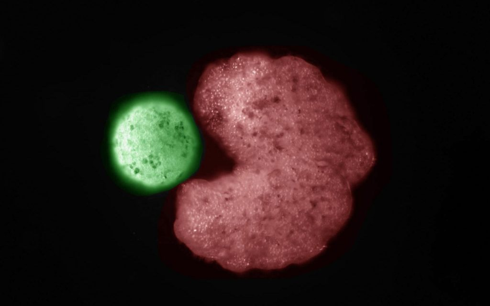

သက်ရှိတွေ မျိုးတုန်း မသွားဖို့ ဆိုရင် သက်ရှိတွေဟာ မျိုးပွားနိုင်စွမ်း ရှိရမှာ ဖြစ်ပါတယ်။ ကမ္ဘာပေါ်မှာ သက်ရှိရယ်လို့ ဖြစ်ထွန်းလာခဲ့တဲ့ နှစ်သန်း ထောင်ကျော် ကလ အပိုင်းအခြား အတွင်းမှာ သက်ရှိ မျိုးနွယ် အမျိုးမျိုးဟာ သူတို့အတွက် သင့်တော်တဲ့ မျိုးပွားနည်း တွေကို ဖန်တီး ခဲ့ကြပါတယ်။
အပင်တွေ ဝတ်မှုန်ကူးပြီး မျိုးပွားတာ ကနေ လိင်ရှိ သတ္တဝါတွေ မျိုးပွားနည်းလမ်း အထိ အမျိုးမျိုး ဖန်တီး နိုင်ခဲ့ကြပါတယ်။ မိုက်ကရို စကုပ်နဲ့ ကြည့်မှ မြင်ရတဲ့ အရွယ် သက်ရှိတွေ ဆိုရင်လဲ ဆဲလ်တွေ နှစ်ခုကွဲပြီး မျိုးပွားနည်း ကနေ ဗိုင်းရပ်စ်တွေလို သူများဆဲလ်ထဲ မောင်ပိုင်စီး ဝင်ရောက်ပြီး မျိုးပွားနည်းတွေ အထိ ဖန်တီးနိုင်ခဲ့ ကြတာပါ။
ယခုတဖန် သိပ္ပံ ပညာရှင်တွေဟာ ဇီနိုဘောတ် သက်ရှိ စက်ရုပ်တွေကို အသုံးချပြီး ယခင် မရှိဘူး ခဲ့တဲ့ မျိုးပွားနည်း အသစ်တမျိုးကို ရှာဖွေ တွေ့ရှိခဲ့ ပြန်ပါပြီ။ ဒီနည်းကို အသုံးချပြီး မျိုးပွားနိုင်တဲ့ ကမ္ဘာ့ ပထမဆုံး မျိုးပွား သက်ရှိ စက်ရုပ်တွေကို အောင်မြင်စွာ တီထွင် ဖန်တီး နိုင်ခဲ့ကြ ပါတယ်။
အခု မျိုးပွားနိုင်တဲ့ ဇီနိုဘော့တ် သက်ရှိ စက်ရုပ်တွေကို ယခင် ဇီနိုဘော့တ်တွေ ပထမဆုံး အောင်အောင် မြင်မြင် တီထွင်နိင်ခဲ့တဲ့ သုတေသန အဖွဲ့ကပဲ စမ်းသပ် အောင်မြင်ခဲ့တာ ဖြစ်ပါတယ်။

ဒီ့ထက် ပို ထူးဆန်းတာ ကတော့ ဒီလို အသစ် ပေါင်းစပ် တပ်ဆင် ထုတ်လုပ်လိုက်တဲ့ ဇီနိုဘောတ် တွေဟာ ဖန်ခွက်ထဲက အခြား ဆဲလ်တွေကို ပေါင်းပြီး နောက်ထပ် အလားတူ ဇီနိုဘောတ်တွေ ထပ်မံ တည်ဆောက်နိုင်တယ် ဆိုတာပဲ ဖြစ်ပါတယ်။
ယခု တွေ့ရှိချက်ကို ဗားမောင့် တက္ကသိုလ် (University Vermont) က ပညာရှင်တွေက တီထွင် ဖန်တီးနိုင် ခဲ့ကြတာပါ။ သူတို့ရဲ့ တွေ့ရှိချက်ကို နိုင်ဝင်ဘာ ၂၉ က ထုတ်ဝေတဲ့ Proceedings of the National Academy of Sciences သိပ္ပံ သုတေသန ဂျာနယ်မှာ တင်ပြခဲ့တာ ဖြစ်ပါတယ်။
ဖားရဲ့သန္ဓေဆဲလ်မှဇီနိုဘောတ်သို့
ဒီ ဇီနိုဘောတ် တွေကို ဖားရဲ့ သန္ဓေဆဲလ် (Embryonic cells) တွေကနေ တပ်ဆင် ထုတ်လုပ် ထားတာ ဖြစ်ပါတယ်။ ပုံမှန်ဆိုရင် ဒီ ဆဲလ်တွေဟာ ဖါးရဲ့ အရေပြား ဆဲလ်တွေ အဖြစ် ပြောင်းလဲ ဖွံ့ဖြိုးလာ ကြမှာ ဖြစ်ပါတယ်။ ဒီဆဲလ်တွေ ထုတ်ယူတဲ့ ဇီနိုပတ်စ် လေးဗစ်စ် (Xenopus laevis) ဖားကို အစွဲပြုပြီး ဇီနိုဘောတ် လို့ အမည်ပေး ထားတာ ဖြစ်ပါတယ်။ဒီ ဆဲလ်တွေရဲ့ မျိုးရိုးဗီဇက ဖားရဲ့ မျိုးရိုးဗီဇ အတိုင်းပဲ ဖြစ်ပါတယ်။ ဒါပေမယ့် ဇီဝ စက်ရုပ် တွေအဖြစ် တပ်ဆင် လိုက်တဲ့ အခါမှာတော့ ရိုးရှင်းတဲ့ လုပ်ငန်းဆောင်တာ တွေကို ပြုလုပ်အောင် ဒီဇိုင်းပြုလုပ်လို့ ရတယ် ဆိုတာကို တွေ့ရှိခဲ့ကြပါတယ်။
ဒီလို ဖါးရဲ့ ဆဲလ်တွေနဲ့ စုပေါင်းပြီး တပ်ဆင်ထားတဲ့ ဇီနိုဘောတ် သက်ရှိ စက်ရုပ်တွေရဲ့ အရွယ်အစားက တစ်မီလီမီတာ အရွယ်ပဲ ရှိပါတယ်။ ဒီ ဇီနိုဘောတ် တွေကို ရိုးရှင်းတဲ့ လုပ်ငန်း ဆောင်တာတွေ ပြုလုပ်နိုင်အောင် ပရိုဂရမ် ပြုလုပ်ထားလို့ ရပါတယ်။ ဇီနိုဘောတ်က လုပ်ဆောင်နိုင်တဲ့ လုပ်ငန်းတွေကို ဥပမာ ပြရရင် သတ်မှတ်ထားတဲ့ ဆေးဝါးလို အရာ ဝတ္ထုတွေကို ကောက်ယူပြီး သယ်ဆောင်တာမျိုး၊ အဆိိပ်အတောက်တွေကို ရှာဖွေ ဖယ်ရှား ပေးတာမျိုး၊ သွေးကြောတွေထဲက အဆီခဲ တွေကို ဖယ်ရှား ရှင်းလင်းတာမျိုး တွေ ပြုလုပ်အောင် ပရိုဂရမ် ပြုလုပ်ထား နိုင်မှာ ဖြစ်ပါတယ်။
ဒီ ဇီနိုဘောတ်တွေကို လိုအပ်တဲ့ လုပ်ဆောင်မှုတွေ လုပ်ဆောင်အောင် ဒီဇိုင်းဆွဲတာကို ဗားမောင့် တက္ကသိုလ်က ဆူပါကွန်ပြူတာတွေ အသုံးပြုပြီး ရေးဆွဲခဲ့တာပါ။ ဆဲလ် အစိတ်အပိုင်း တစ်ခုချင်းစီ ကိုတော့ ပညာရှင်တွေက မိုက်ကရိုစကုပ် အဏုကြည့် မှန်ဘီလူး အောက်မှာ လက်နဲ့ တစ်ခုချင်းစီ တပ်ဆင်ပေးရတာပါ။
ဒီ ဇီနိုဘောတ် တွေဟာ သူတို့ကို ပရိုဂရမ် ပြုလုပ်ထားတဲ့ လုပ်ငန်းဆောင်တာတွေကို လုပ်ဆောင်နိုင်စွမ်း ရှိရုံ မကပဲ ထိခိုက်ဒါဏ်ရာရ ခဲ့လို့ ရှိရင်လဲ မိမိဘာသာ ပြန်လည် ပြင်ဆင်နိုင်စွမ်း ရှိကြပါတယ်။ အခု နောက်ဆုံး တွေ့ရှိ ချက်အရ ဇီနိုဘောတ်ကနေ နောက်ထပ် ဇီနိုဘောတ်တွေကို ထပ်ပြီး တည်ဆောက်နိုင်အောက်လဲ ပရီုဂရမ် လုပ်လို့ရတယ် ဆိုတာကို တွေ့ရှိရပါပြီ။
ပုံမှန်ဆိုရင် ဇီနိုဘောတ် မိခင်ဟာ ဆဲလ် အလုံး ၃,၀၀၀ လောက်ကို ဘော်လုံး ပုံသဏ္ဍာန် စုစည်းပြီး နောက်ထပ် ဇီနိုဘောတ် ကလေးတွေ မွေးဖွား ပေးနိုင်ကြပါတယ်။ ဒါပေမယ့် ပြဿနာက ဒီလို မွေးဖွားပြီး မကြာမီပဲ မိခင် ဇီနိုဘောတ်က သေဆုံးသွားပါတယ်။
ဒီလို သေဆုံး မသွားအောင်လို့ ကွန်ပြူတာ AI ကို အသုံးချပြီး အသက်ဆက်ရှင်နိုင်မယ့် ဇီနိုဘော့ကို ဒီဇိုင်း ပြုလုပ်ခဲ့ကြပါတယ်။ လပေါင်းများစွာ တွက်ချက် အပြီးမှာတော့ pac man အရုပ်လို ပါးစပ်ပေါက် ပုံစံလေးနဲ့ ဇီနိုဘောတ်ကို ကွန်ပြူတာက ပုံစံ ထုတ်ပေးခဲ့ပါတယ်။
ဒီပုံစံကို လက်တွေ့ တည်ဆောက် စမ်းသပ် ကြည့်တဲ့ အခါမှာတော့ ထပ်ခါ ထပ်ခါ ဇီနိုဘောတ် အသစ်တွေ တည်ဆောက် ပေးနိုင်တဲ့ ဇီဝ စက်ရုပ်ကို ရရှိလာ တာပဲ ဖြစ်ပါတယ်။
ဒီ ဇီနိုဘောတ် တွေဟာ သူတို့ကိုယ်တိုင် ထပ်ခါထပ်ခါ သက်ရှိစက်ရုပ် အသစ်တွေ တည်ဆောက် ပေးနိုင်သလို ထွက်လာတဲ့ စက်ရုပ်အသစ် တွေကလဲ နောက်ထပ် သက်ရှိစက်ရုပ်တွေကို ထပ်မံ တည်ဆောက် ပေးနိုင် ကြပါတယ်။ ဒီလိုနည်းနဲ့ ဇီနိုဘောတ် မေမေကြီး ကနေ ဇီနိုဘောတ် သား၊ သမီး၊ မြေး၊ မြစ်၊ တီ၊ တွတ်တွေ ဆင့်ပွား တည်ဆောက် သွားနိုင်ပါတယ်။
လက်ရှိ အချိန်မှာတော့ ဇီနိုဘောတ် သက်ရှိ စက်ရုပ်တွေဟာ စမ်းသပ်ဆဲ အဆင့်ပဲ ရှိပါသေးတယ်။ ဒါပေမယ့် မကြာတဲ့ အနာဂါတ်မှာတော့ လက်တွေ့ အသုံးချ နိုင်တဲ့ ဇီနိုဘောတ်တွေကို တွေ့မြင် ကြရ တော့မှာ ဖြစ်တယ်လို့ သုတေသီ များက ယုံကြည်ကြပါတယ်။
Reference:
Xenobots: Scientists Build the First-Ever Living Robots That Can Reproduce | SciTech Daily
First Living Robots Created by Assembling Living Cells From Frogs Into Entirely New Life-Forms | SciTech Daily